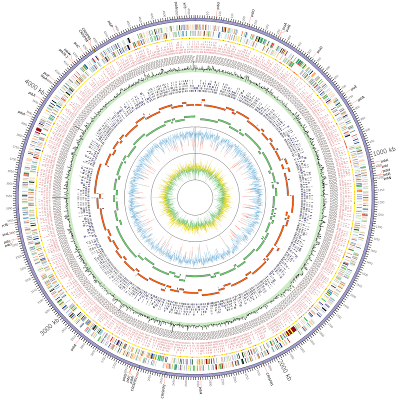
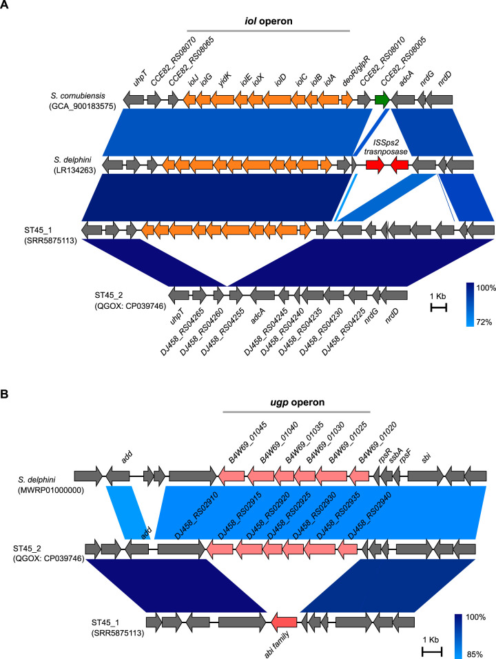
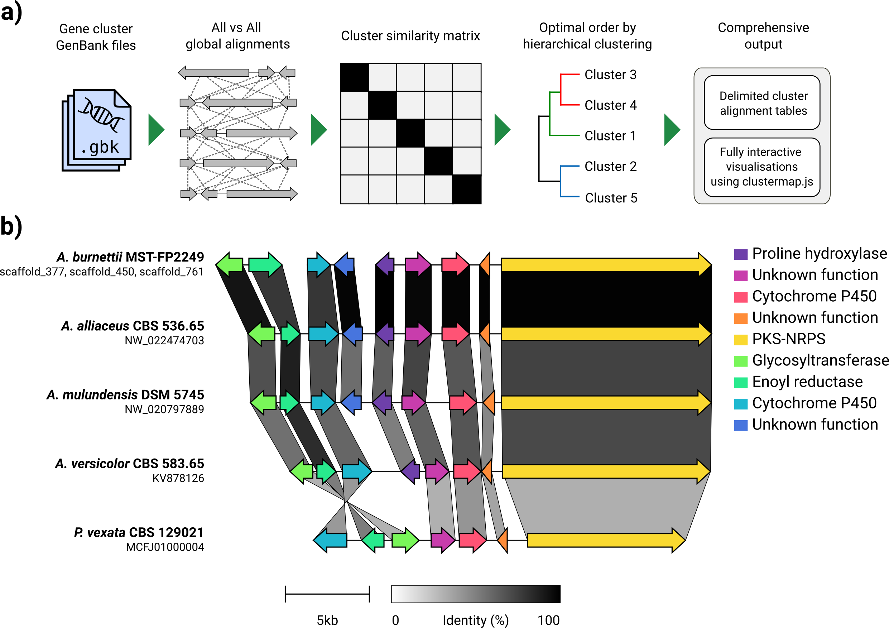
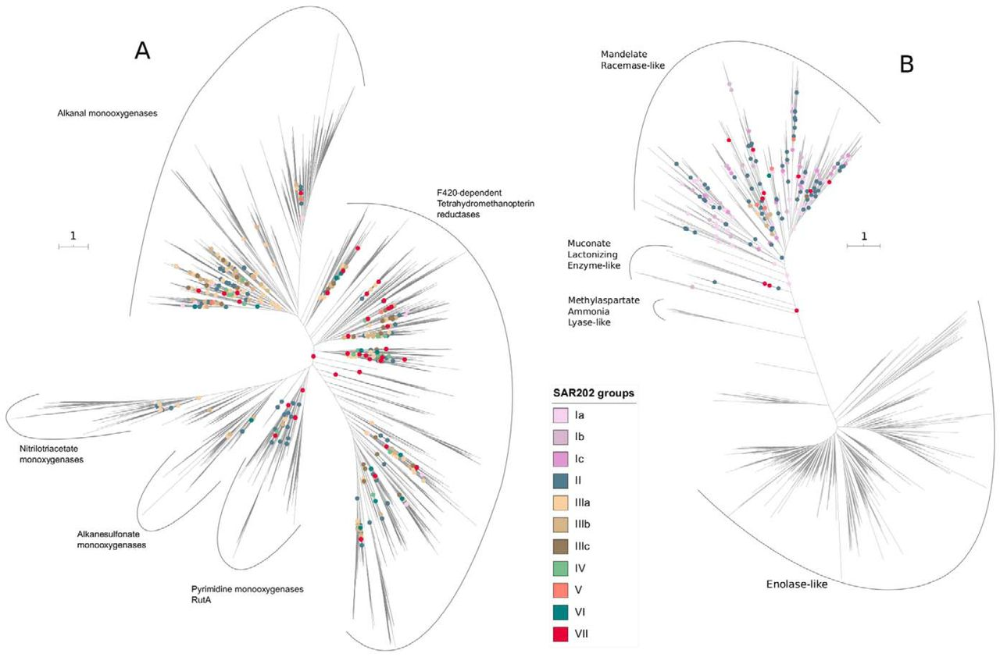

Visualization of microbial genomes¶
There are various tools and techniques for visualizing microbial genomes. Take for example, this figure from a paper I published in 2013.
This figure was created using a tool known as Circos. See here: http://circos.ca/
If you visit this page, you can see beautiful pictures of various circular drawings produced using this tool. See here for examples of published images created with this tool: http://circos.ca/intro/published_images/
They have highlighted the figure I created on this page as well. This tool has been used not only in genomics but other fields such as economics and political science, for example. This tool has a pretty steep learning curve and it will take a bit of time to learn to use this tool. However, it comes with various tutorials and example data that you can start with. Then you can learn to adapt it to visualize your own data.
You can visit this page (http://circos.ca/documentation/) to download Circos tutorials to try their examples. Circos is available through Bioconda so you should be able to install it using the conda command.
Circos has been adapted into R packages as well. See here and here. A few known tools similar to or related to the original Circos are, R Circos, BioCircos, and Circlize. R versions of these tools make it a lot easier for you to create circular visualizations of microbial genomes, especially those packages with clear examples to follow. I highly recommend you check out the circlize R package as it provides very detailed instructions and examples to follow.
We will not be learning to use all these tools in class. This is for you to explore yourself and improve your skills in biological sequence analysis and data visualization. I am just showing you that these are useful tools for various reasons. You can definitely go on your own and start learning how to use these tools for your research projects.
Visualization of gene segments or clusters¶
What about figures like this one shown below, from a study to identify a genomic region that might have been horizontally transferred from another organism?
As you can see, figures like these shown are very informative as they can display the protein-coding regions in genomes and you can easily see if certain genes are conserved in one or more organisms. They are also useful to display genome rearrangements that may have occurred during the course of their genome evolution.
This figure was created using the tool known as EasyFig. The paper describing this tool was published here: https://pubmed.ncbi.nlm.nih.gov/21278367/
You can download this tool here: https://sourceforge.net/projects/easyfig/
You can also use other tools such as genoPlotR, which you have used a few weeks ago. genoPlotR provides many additional useful features such as being able to display phylogenetic trees to go along with figures of gene clusters or genomic regions. However, it is not an easy tool to learn to use and may require several hours of learning to use its R functions and commands.
Another tool that just came out in recent years to compare and visualize syntenic gene clusters is known as Clinker.
https://github.com/gamcil/clinker
This tool is written in a completely different programming language: Javascript. It can draw similar figures to genoPlotR as you can see here:
Again, be mindful that this tool is designed to display only a short segment of the genomes of two or more very similar organisms. You should not try to align whole genomes and visualize them as it may not work with this tool.
Phylogenetic trees visualization¶
How about display phylogenetic trees and associated information? You have already learned to use FigTree, a graphical tool to display phylogenetic trees and to save output PDF or image files from its display. Although this tool is quite useful, sometimes, you may have hundreds or thousands of taxa that may not display well on FigTree. In those cases, you will sometimes require to use more specialized tree-viewing tool or software.
Take for example, look at this tree below from a paper I published early this year.
These trees contain thousands of taxa and will not display well on FigTree. For trees like these, you may want to use a tool known as iTOL. See here (https://itol.embl.de/) to visit this web-based tool. This tool can display thousands of tree branches as shown and it provides many useful features such as heatmaps, charts, or graphs to go along with the phylogenetic tree. It will also allow you to export the high-quality vector drawing of these tree figures into formats such as SVG, PDF, or EPS, so that you can use other tools like Adobe Illustrator or Inkscape to touch up and improve the figures for publication.
Sometimes, you need to do more than just displaying phylogenetic trees. You can use phylogenetic/phylogenomic trees to detect horizontal gene transfer events, measure distances between clades of interest (for example, to understand their evolutionary distances), or even perform statistical tests to prove/disprove your hypotheses. For those purposes, you cannot just use a simple phylogenetic displaying tool like FigTree or even iTOL. You need more programmatic tools. Some of these tools are available in both Python and R languages.
In Python, there is a tool known as ETE Toolkit (see here: http://etetoolkit.org/). It is a Python framework for analysis and visualization of phylogenetic trees. If you visit this page, you will see that the tool can not only display beautiful trees but it can also annotate trees, compare tree topologies, test hypotheses, etc. It provides command-line tools but also a Python library that you can use to develop your own Python scripts to display phylogenetic trees. Python code and tutorial (with examples) can be found here: http://etetoolkit.org/docs/latest/tutorial/index.html
For example, I can use ETE Python library and display a tree within the Jupyter environment. See examples below:
[2]:
from ete3 import Tree, TreeStyle
t = Tree( "((a,b),c);" )
circular_style = TreeStyle()
circular_style.mode = "c" # draw tree in circular mode
circular_style.scale = 20
t.render("%%inline")
[2]:
[4]:
from ete3 import Tree, TreeStyle
t = Tree()
t.populate(30)
ts = TreeStyle()
ts.show_leaf_name = True
ts.mode = "c"
ts.arc_start = -180 # 0 degrees = 3 o'clock
ts.arc_span = 180
t.render("%%inline", tree_style=ts)
[4]:
As you can see, in just a few simple code, you can display tree structures very easily and without having to mess around with things manually. Tools like ETE Toolkit are very useful if you have thousands of individual trees to display and it would not be feasible to use a graphical tool like FigTree to draw each of the tree figure.
Besides ETE Toolkit, there is another Python-based tool known as Dendropy (See here: https://dendropy.org/). Dendropy is more of a utility tool for phylogenetic tree analyses rather than for displaying publication-quality tree figures.
In R, there are several tools that allow you to do similar kinds of analyses but also display beautiful tree figures. One of the most well-known R packages is known as Ape, which stands for “Analysis of Phylogenetics and Evolution”. You can find it here and here.
Books have been written about this tool and you can see one of the books here:
http://ape-package.ird.fr/APER.html
Another, more recent, R package is known as ggtree. See here:
https://guangchuangyu.github.io/software/ggtree/
The paper describing ggtree can be found here. It is similar to ETE Toolkit in terms of the functionality and features it provides, though it is mostly a visualization tool. You can even use it together with other tools such as phyloseq you used a few weeks ago to display trees and associated features such as abundances of certain taxa.
For more detailed examples and use cases, see this website:
https://guangchuangyu.github.io/ggtree-book/chapter-ggtree.html
Final comments¶
Again, to reiterate my points made earlier, these are just a few examples of some visualization tools and techniques available and they are by no means comprehensive. Bioinformatic tools are being developed and published every day and some of the tools mentioned here today may become obsolete in a few months. This is the nature of how quickly this field is moving forward. So I would highly encourage you to explore new tools and try to use them yourself and I hope that at least some of the tools you have learned to use in this course will become useful for your own research in the near future.